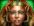
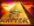

5-reel 40-line slots
The objective of Cat Queen is to obtain winning symbol combinations by spinning the reels.
To play the game:
- Line bets are chosen by clicking + and &emdash; below Line Bet to increase or decrease the amount.
- Paylines can be activated and their shape displayed by progressively clicking + and &emdash; below Lines. Paylines can also be activated by using the numbered buttons on either side of the reels. Selecting a high payline includes all the lower ones too. For example, selecting payline 6 also activates paylines 1 through 5. Clicking Bet Max activates all paylines with the currently selected bet per line and spins the reels.
- Total bet per game round = line bet X active paylines.
- Clicking Spin spins the reels with the current selection of lines and line bets. During the reel spins the Spin button changes intoStop. Clicking Stop ends the spin animation and immediately displays the spin result.
- Reels can also be spun using the Auto Play function. Mouse over the Auto Play button to display the list of options. Select the number of spins to be played automatically or choose 'Until Feature' to spin until the Free Games round is triggered. Clicking on an option starts the Auto Play function. The Auto Play button changes into Stop during the Auto Play mode. The Auto Play mode ends when the reels have been spun the number of times determined by the player, or when a Free Games round is triggered if you chose ‘Until Feature’, or when you click Stop.
- Clicking the Turbo Mode button switches on or off the Turbo Mode thus turning on or off some of the win animations and sounds, and making the reels spin faster or slower.
- Wins are calculated according to the paytable. Line win = line bet X corresponding multiplier according to the paytable. Scatter win = total bet X corresponding multiplier according to the paytable. The paytable can be accessed via the Info page.
- On a given payline, only the highest payline winning combination pays while simultaneous winnings on different paylines are accumulated.
- In case of a winning spin, the Win field displays the accumulating winnings. The Win ticker can be stopped by clicking anywhere on the screen to display the total win amount immediately.
- Payline wins and the total win are also displayed on the strip located at the bottom of the reels or the game window.
Info page:
- Clicking Info opens the reference screen describing different game components. Clicking the arrow buttons at the bottom of the screen enables navigating between the different info screens.
- The Paytable screen shows all winning combinations. When opened after a winning spin, the awarded multiplier is highlighted and blinks.
- The Free Games screen describes how the Free Games round is triggered and what its rules are.
- The Double screen describes how to try doubling winnings and describes the doubling-up rules.
- The Paylines screen illustrates all possible payline combinations and explains the payout rules in the game.
- Clicking Back exits the Info screen and returns to the game.
Paylines:
- Active paylines are represented by lines that appear over the reels. Paylines can be activated and their shape displayed by progressively clicking + or &emdash; below Lines.
- Only active paylines can register wins.
- There is a difference between the line bet and the total bet. The line bet shows how much is being bet on a single payline. The total bet shows how much is being bet in total on the game round. Payouts shown in the paytable are multiplied by the line bet.
The Scatter symbol is an exception to these rules. More information about the Scatter symbol can be found below.
About payouts:
- Payouts are listed on the Paytable screen. To find the possible win amount, the line bet must be multiplied by the payout.
- If two payline winning combinations occur on the same line, the higher of them is paid out. If more than one active payline has a winning combination, the winnings are accumulated.
- Winning combinations must start from the left most reel, and the symbols have to be consecutive.
The Scatter symbol is an exception to these rules. More information about the Scatter symbol can be found below.
Wild Symbol
The Wild symbol in the game is the  symbol. It can stand for any other symbol, except Scatter, to make the best possible winning combination. There is also a separate payout for three or more Wild symbols on an active payline, as seen in the Paytable. Five Wilds on an active payline pay the max win according to the paytable.
The Wild symbol is stacked on all reels. This means that the Wild symbols lay one on top of the other on each of the reels.
Scatter Symbol
The Scatter symbol in the game is the  symbol. The Scatter symbols do not have to occur on any particular payline. If there are three or more Scatters in the spin results, the payout earned is multiplied by the total bet and added to payline winnings.
Three or more Scatters appearing simultaneously anywhere on the reels during the main game trigger 15 Free Games and pay separately; the winnings are multiplied by the total bet as described in the paytable.
Free Games
Whenever three to five appear anywhere on the reels during main game, 15 Free Games are triggered. To start the Free Games, click on Click to Start.
Three to five symbols anywhere on reels during the Free Games pay according to the paytable. Three or more symbols add more Free Games as described above. More Free Games can be won this way infinitely.
During the Free Games, the reels are spun automatically using the same number of lines and bets per line as on the spin that won the Free Games round. After each spin, the win is displayed in the Win field. The Free Games Win field shows the accumulated winnings from the current Free Games.
After all Free Games have been completed, a result board summarizes the winnings and states the number of Free Games played.Feature win shows the winnings that were received during the Free Games. Clicking on the board will return you to the main game.
When returning to the main game, clicking anywhere on the screen stops the win ticker and displays the full prize. Free Game wins are added to the payline and Scatter wins.
If the Free Games that follow have been triggered during the Auto Play mode, the Free Games round begins after the player clicks onClick to Start. When all Free Games have been played and the player clicks on the screen summarizing the Free Games win, the Auto Play mode resumes. When returning to the main game, clicking anywhere on the screen stops the win ticker and displays the full prize.
Double
A win activates the Double button which, when clicked, starts the Double feature where you can bet the winnings from your last spin to try to increase them.
Your current winnings are shown in the Bank field. You can choose to bet these winnings by clicking the Double button. The Double Tofield shows the amount that will be placed in the Bank if you win. You can also choose to bet only half of your current winnings (by clicking Double Half) and keep the other half in the Bank. The Double Half To field shows the amount that will be placed in the Bank (includes the amount that remained in the Bank) if you win.
The Bet field will show your bet in the Double round.
If you do not want to bet, you can click Collect to add the winnings from the last spin to your balance and return to the main game. If you choose to bet, the dealer's card is revealed on the left-hand side of the screen and you have to pick a card from the remaining face-down cards. If you pick a card with a higher ranking than the dealer's card, you win. If your card is equal in ranking, the bet is returned. If your card is lower in ranking than the dealer's card, you lose your bet and the Double feature ends.
With every win, you can bet again until the winnings in the Bank are equal to or greater than the Double feature limit. The limit is shown on the Info page that describes the Double feature.
Click Collect to add your winnings from the Bank to your balance and return to the main game.
Please note: The Double button is disabled during the Free Games and while the Auto Play is active.
Return to Player
The theoretical percentage return to player (RTP) is 95.89%.